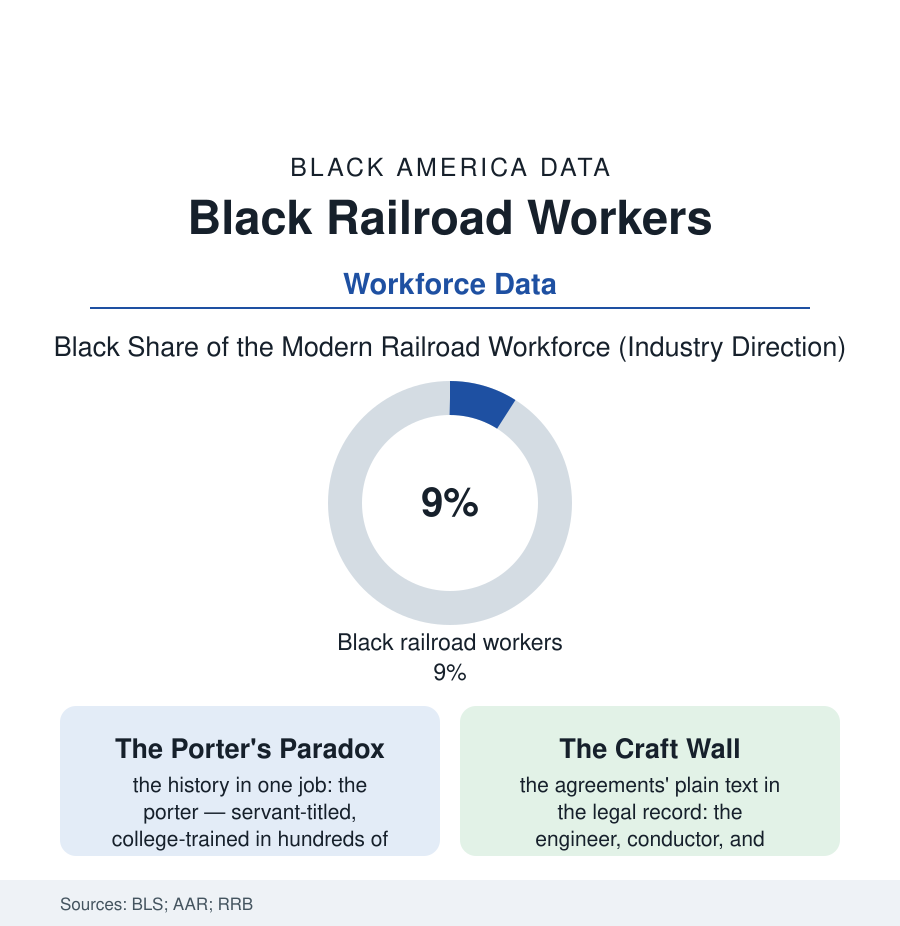

Black Employment
The Railroad File: Black Workers on the Iron Road
The Pullman porter was the most famous Black worker in America — and the railroad's other thousand jobs were closed to his brothers for a century. The iron road's ledger, then and now.

No industry holds a larger place in Black America's working memory than the railroad — the machine that carried the Migration, employed its most famous union, and drew, in its craft agreements, some of the hardest color lines in the labor book. Its modern workforce is a fraction of its peak and a study in what integration looks like when it arrives a century late. This article reads the railroad file.
The Porter and the Wall
The structure of the old railroad was a caste system with a timetable: the operating crafts — engineer, conductor, fireman, brakeman — reserved, by union agreement and company practice documented in the fair-employment litigation of the 1940s, to white men; the service crafts — the Pullman porters, the dining-car waiters, the redcaps, the track laborers of the section gangs — assigned to Black men, with the maids and coach attendants beside them. The paradox at the system's center is the labor history's most famous: the porters, the most servant-titled of the crafts, converted their position — the tips, the travel, the national network of men who saw every city and carried every newspaper — into the Brotherhood of Sleeping Car Porters, the union whose 1937 contract was the era's landmark and whose leadership and treasury seeded the civil-rights movement's infrastructure for thirty years, a line this atlas's union file draws from the porter to the Memphis sanitation strike without a break. The wall's demolition came by the era's combined machinery: the Supreme Court's fair-representation doctrine born in the railroad cases themselves (the Black firemen's suits of the 1940s making the law the whole labor movement now uses), the diesel locomotive abolishing the fireman's craft the wall had guarded — technology integrating by deletion — and the industry's own contraction doing the rest, the railroad workforce shrinking from its million-plus peak to a tenth of it across the very decades the crafts finally opened, so that the integrated railroad the cases won was a small, seniority-locked remnant of the empire its Black workers had served from outside the cab.
The Modern Iron Road
Today's industry in the data is a high-wage, high-seniority skeleton of itself: the freight roads' hundred-thirty thousand, the Amtrak and commuter workforces beside them, the wages at the industrial file's summit and the workforce's Black share in the high single digits — concentrated, in the occupational tables, where the history would predict and slowly beyond it: the porters' heirs in Amtrak's service crafts, the track and shop labor of the maintenance-of-way rows, the dispatchers' and engineers' classes of the recent hiring decades diversifying by the cohort, the Railroad Retirement system's pensioners preserving, in the annuity data, the demographics of the industry that was. The modern fights are the industry's own: the crew-size and automation battles (the one-person crew, the driverless yard — the labor file's automation chapter on rails), the precision-scheduled railroad's staffing famine and its service failures in the regulatory record, the hiring waves that followed recruiting, at last, in the neighborhoods the section gangs came from. And the memory's institutionalization proceeds in the preservation data: the Pullman neighborhood a national monument, the porters' oral histories in the archives, the industry's own museums hanging the porter's cap beside the engineer's — the two crafts' artifacts reconciled, a century on, in the display case. The iron road made the modern Black workforce mobile, organized, and — in the porter's union — politically armed. Its ledger closes with the numbers small and the wages high: the industry its workers were kept from, inherited by a workforce too shrunken to hold them all, the seniority lists reading like the guest list of a feast that ended before the invitation arrived.
Reading the Railroad Data
The railroad file is the employment section's epic: the wall, the union built outside it, and the victory that arrived with the industry's twilight. The Retirement Board publishes the annuities. The porters' grandchildren — scattered by those same rails into every city of this atlas — publish the rest, in family Bibles whose flyleaves read like timetables. All aboard was the porter's call. The data say his people heard it, and built the century.
More in Black Employment
The Black Unemployment Rate: The Two-to-One Pattern
Black unemployment runs at roughly twice the White rate — 5.5 percent against 3.3 percent in annual averages — a ratio stable across five decades of federal data. How it is measured and why it persists.
Black Median Weekly Earnings: The 80-Cent Ratio
Black full-time workers earn a median of about $900 a week — roughly 80 cents for every dollar White workers earn. The BLS earnings data by group, gender, and occupation.
Black Labor Force Participation: Working at National Rates
Black labor force participation runs at roughly the national rate — and Black women participate at higher rates than White women. The BLS participation data.
Source: U.S. Bureau of Labor Statistics; Association of American Railroads; Railroad Retirement Board data; National Railroad Hall of Fame and Pullman historic records.